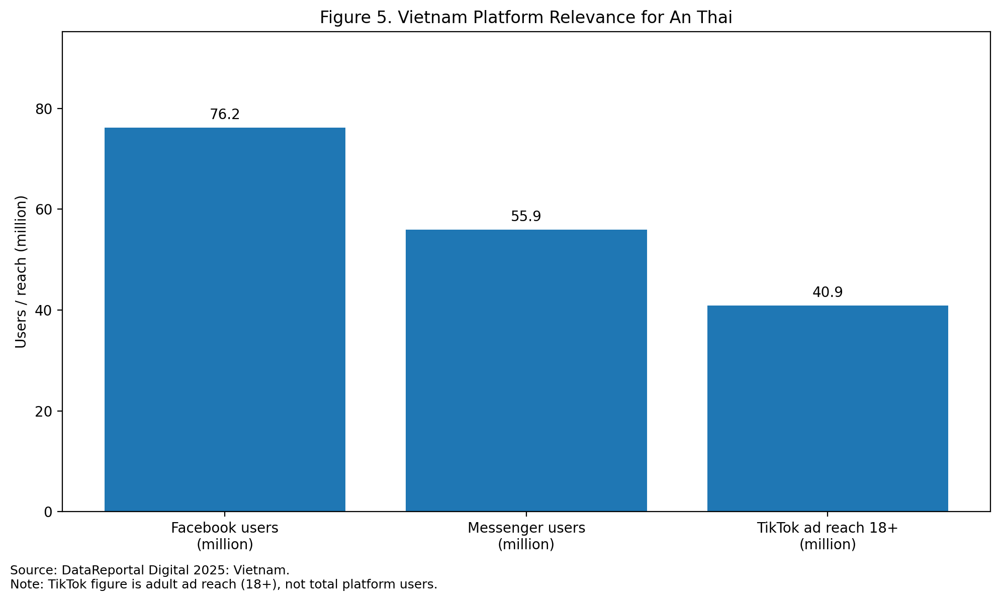
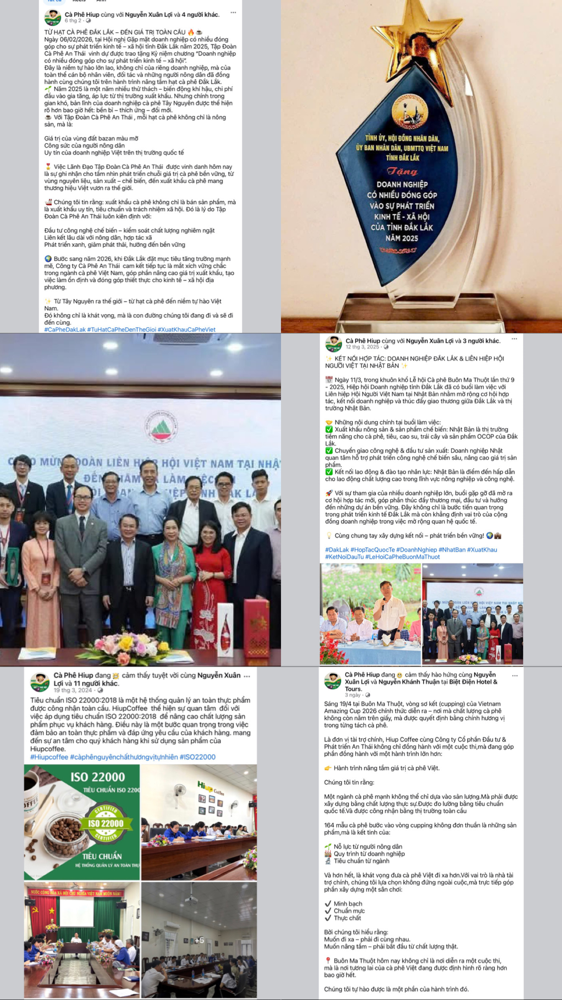

Facebook · Messenger · RACE
For An Thai in Vietnam, Facebook is the most relevant social media platform to evaluate because it combines scale, routine use, community interaction, and service functionality.
DataReportal states that Facebook had 76.2 million users in Vietnam in early 2025, while Messenger reached 55.9 million users. These figures are especially important for a coffee brand because they indicate that Facebook is not just a media platform, but also a customer-contact environment.
This section applies the RACE framework. Under Reach, Facebook performs strongly because it gives An Thai access to a large Vietnamese audience and supports brand storytelling around coffee origin, product ranges, gifting, and café-related lifestyle content. Under Act, Facebook is also effective because users can react, click, comment, and message quickly, making it a useful platform for turning awareness into interest and enquiry. These two stages are where Facebook clearly fits An Thai’s current needs.
The weaker stages are Convert and Engage, but not because Facebook itself lacks value. The issue is that conversion only works well when the platform is connected to a clear landing or purchase path. If users click from Facebook into a page where the buying route is unclear or product pricing is hidden behind “Contact”, then Facebook traffic will not translate efficiently into sales support. At the Engage stage, Facebook remains useful because it supports repeated exposure, comments, messaging, and customer familiarity, all of which are commercially valuable for a repeat-purchase category such as coffee. However, sustained engagement still depends on consistent content quality and fast response.
Overall, Facebook is a strong platform choice for An Thai, but only when used as part of a wider digital system. Managers should therefore view Facebook as the company’s lead community and service channel, not as a stand-alone sales engine. The commercial task is to connect Facebook more tightly to product pages, distributor routes, and message-handling processes.

| RACE stage | How Facebook helps An Thai | Key strength | Key limitation |
|---|---|---|---|
| Reach | Brand visibility and storytelling | Mass local scale | Organic reach depends on algorithm |
| Act | Reactions, comments, messages | Easy interaction | Not all interaction converts |
| Convert | Traffic to product/contact pages | Possible via links and Messenger | Weak if landing path is unclear |
| Engage | Repeat exposure and dialogue | Useful for routine coffee behaviour | Requires consistent response and content |
Facebook is strongest for reach, enquiry, and relationship maintenance, but its conversion value depends on stronger owned-media pathways.

Facebook should function as an entry point into enquiry and conversion, not as an isolated communication channel.